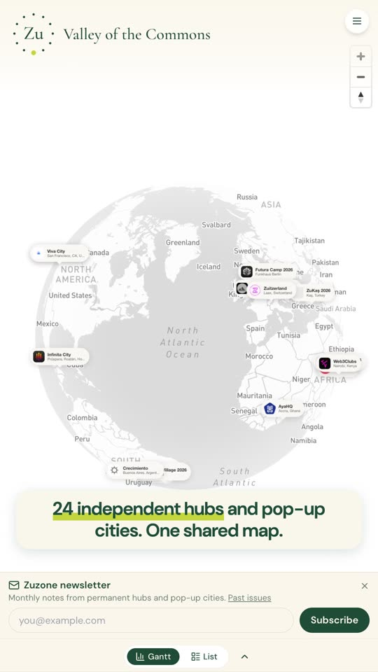
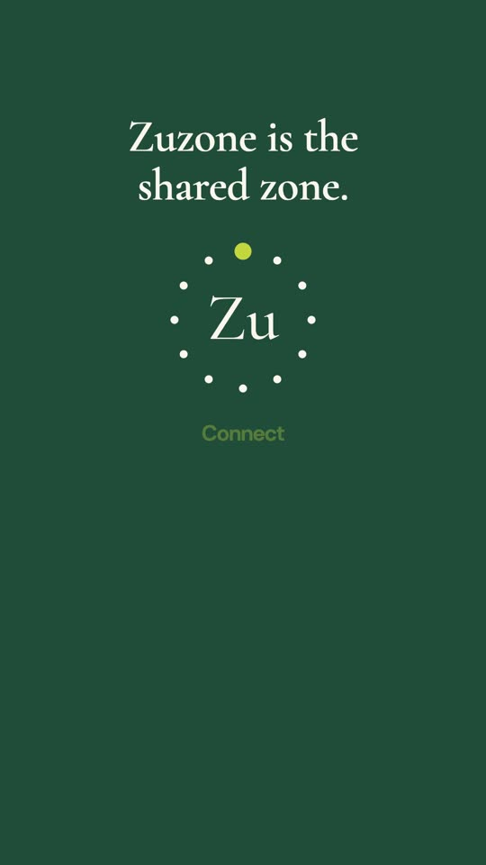

A 58-second invitation to the new Zuzone: 24 independent hubs and pop-up cities on one shared map, each its own thing; Zuzone as the shared zone where they connect; then what a village page holds, the year on one timeline, the network’s pulse, and the door in. Closes on the client’s line: you can belong to your own thing and still be in the zone.


Every cut lands on a tock. Everything on screen is the live platform or the identity’s own geometry, in cream, forest and lime. Captions carry the story so it works muted. The player carries a guide voice (an AI read, for timing only); the bed has no voice, for your own recording. v2 answers the client’s note: two new beats make the hubs’ independence explicit, and the closing line is theirs.
Open the voice-free bed (music, tocks, SFX) · Open the guide-voice cut
The ring ticks through village names, the globe turns, the list of 24 scrolls by. Then two cards: each hub is its own thing; Zuzone is the shared zone.
A village page, the timeline, the pulse, the newsletter, the history, and the door in: add your village with Zupass.
The lockup ticks through nine names. “You can belong to your own thing, and still be in the zone.” The end card.
Same 58 seconds, same beats, captions and sound, built for landscape screens. The platform shots are the desktop site at 1920×1080 (globe centred, panels sliding in from the right, the Gantt strip across the bottom) rather than a pillarboxed phone. The brand plates re-lay for landscape: the name sits beside the ring, as the lockup is designed.
Open the 16:9 voice-free bed · Open the 16:9 guide-voice cut
Sixteen shots, each rendered exactly as it sits in the cut. Hover or tap a clip to play it. Time codes are the reel's own.
The metronome is one soft wooden tock every 0.8 s, first frame to last. Under it, a 58 s bed at 75 BPM: felt piano and a soft plucked synth, no drums. A low air whoosh under the globe at 0:03, one bright ding on the last tick at 0:57.
Twelve lines, 92 words. Warm, a touch quicker than the reel: this one invites. Start each line at its time; the budget is the room it has before the next cue. “Zuzone” is ZOO-zone, “Zupass” is ZOO-pass. One line per file or one take with a second of silence between lines, 48 kHz mono, and the lines drop onto the bed.
| At | Line | Budget |
|---|
| Generated through monid | Runs | Cost |
|---|